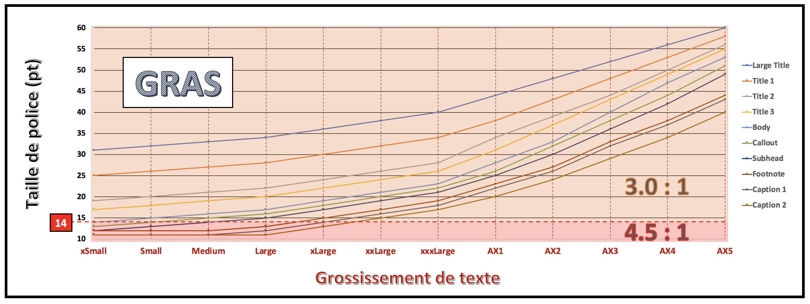
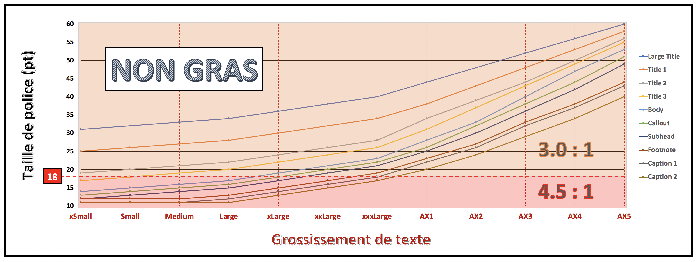
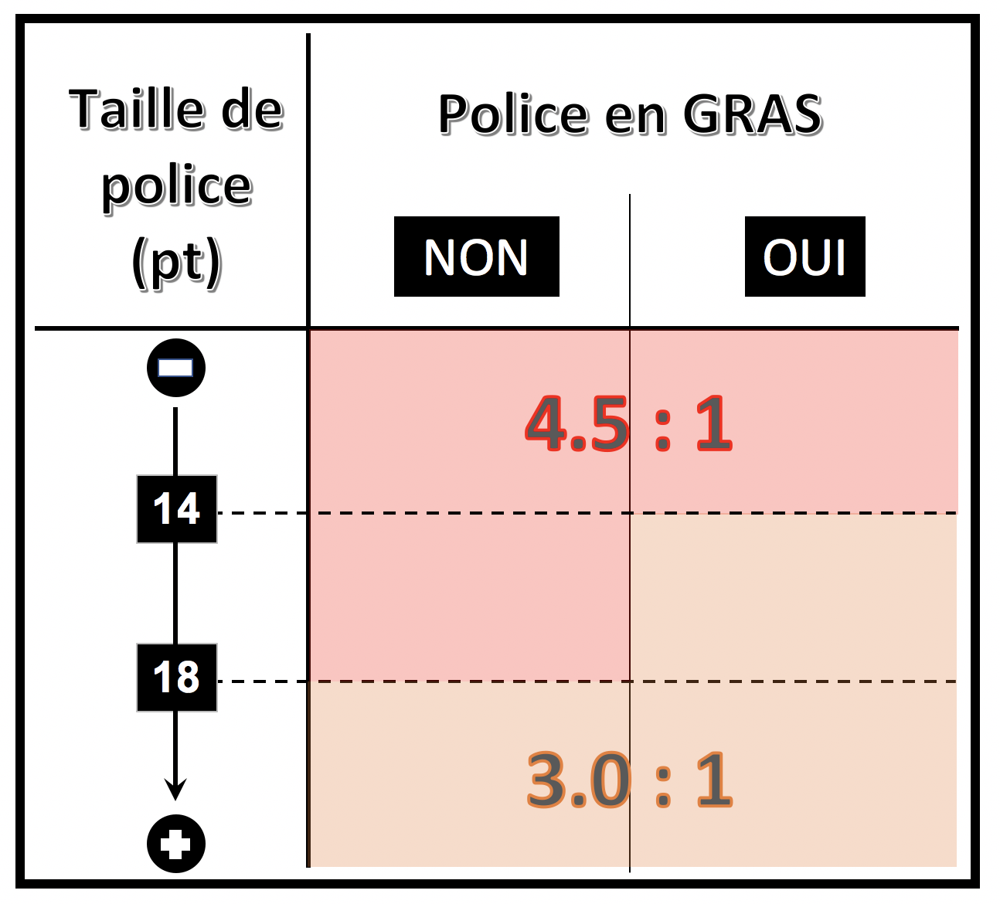
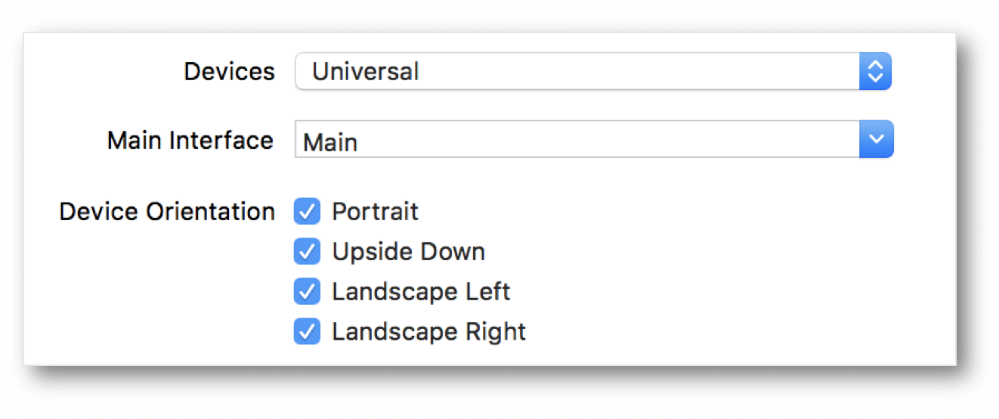
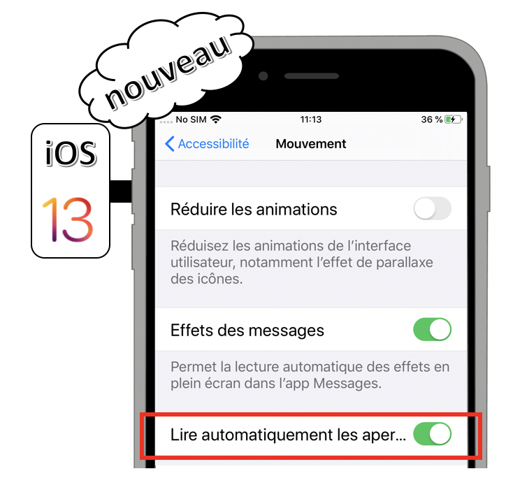
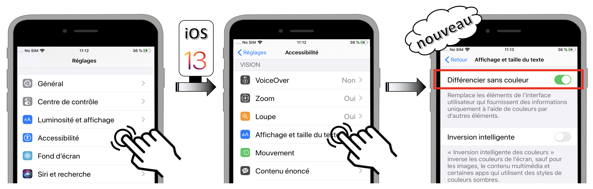
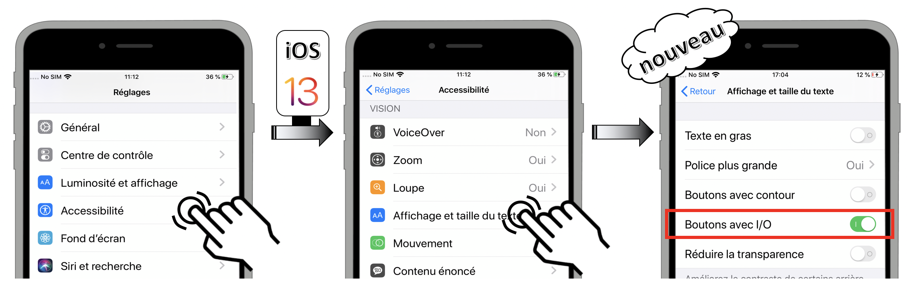

Les critères de conception iOS
Ce guide a pour objectif de présenter les différents critères d’accessibilité à respecter pour obtenir une application iOS accessible. Chacun de ces critères est présenté en expliquant pour qui il est important, quand on peut le mettre en place, pourquoi il est important et la règle d’accessibilité qui en découle.
Images
Cible : tout le monde et en particulier les personnes déficientes visuelles.
Quand : lors de la conception et pendant le développement.
Description :
Les images sont très souvent utilisées pour transmettre de nombreuses informations. Comme le dit l’adage, une image vaut mille mots. Les non-voyants ne pouvant voir les images, il est important que celles-ci possèdent une alternative qui donne toutes les informations portées par l’image.
Dans le cas d’une image contenant du texte, l’alternative sera ledit texte. Dans le cas d’une image qui apporte des informations sous la forme d’un graphe, dessin ou autre, l’alternative devra contenir toutes les informations nécessaires présentes dans l’image.
Certaines images sont utilisées à des fins décoratives. Ces images ne nécessitent pas d’alternative. Par défaut sous iOS, les images ne sont pas vocalisées par le lecteur d’écran VoiceOver.
Les illustrations de l’application sont également considérées comme des images décoratives. La règle est donc la même : il n’y a pas d’alternative textuelle à ajouter.
Les icônes sont, a contrario, largement utilisées en tant que boutons pour des fonctionnalités diverses. Elles ont donc besoin d’alternatives textuelles pertinentes.
L’alternative d’une image est renseignée via l’attribut accessibilityLabel (via le protocole UIAccessibility implémenté par tout élément standard dérivant de UIView).
À vérifier :
- les images portant de l’information restituent cette information à travers leur alternative textuelle,
- les images décoratives n’ont pas d’alternative textuelle.
Objectif utilisateur :
Permettre l’accès à l’information incluse dans une image pour des utilisateurs qui n’y ont pas accès. Point bloquant : une image sans description textuelle est inexploitable par des personnes ayant des déficiences visuelles ou celles n’affichant pas les images (mobile, faible bande passante…).
Exemples :

En décomposant l’image :
 pas d’
pas d’accessibilityLabel
buttonView.accessibilityLabel = "example_image_edit_accessibilityLabel".localized
buttonView.accessibilityLabel = "example_image_settings_accessibilityLabel".localized
Couleurs
Cible : tout le monde, en particulier les personnes malvoyantes, les seniors et les personnes avec des problèmes de vision (daltonisme, vision des contrastes, etc.)
Quand : dès la phase de conception et lors du développement.
Description :
Les couleurs jouent un rôle très important dans la transmission des informations. On associe certaines couleurs à des concepts ou à des sensations, mais il ne faut pas oublier qu’une partie de la population ne distingue pas correctement les couleurs. La décision de mettre certaines polices en gras va favoriser un contraste plus faible pour des tailles basses de police.  Ne pas mettre des polices en gras va demander un contraste des couleurs plus fort que dans le cas précédent.  Avec l’apparition du Dynamic Type permettant de grossir de façon conséquente la taille de police, le contraste des couleurs n’est pas nécessairement figé et doit s’adapter au grossissement souhaité. 
À vérifier :
- La couleur ne doit jamais être le seul canal de transmission d’une information, d’indication d’une action, de sollicitation d’une réponse ou de distinction d’un élément.
- Le contraste entre les couleurs de texte et de fond doit aussi être suffisant (à calculer avec Colour Contrast Analyzer par exemple).
Objectif utilisateur :
Faciliter la lecture à tous les utilisateurs, déficients visuels ou personnes dans un environnement lumineux défavorable (en mobilité).
Permettre aux utilisateurs ne distinguant pas les couleurs (daltoniens, déficients visuels, déficients auditifs, utilisateurs de mobile en luminosité extérieure…), d’accéder tout de même à l’information par d’autres moyens.
Outil : L’application Colour Contrast Analyzer permet de mesurer rapidement des niveaux de contraste de couleurs (gratuit pour mac et windows).
Exemple de contraste non valide :
Le texte « film | 20h40 … » ne présente pas un contraste suffisant. Celui-ci ne sera pas lisible par tous les utilisateurs.

Exemple de passage d’information par la couleur valide et non valide :

Alternative textuelle
Cible : tout le monde et en particulier les personnes déficientes visuelles.
Quand : dès la conception, à la rédaction du contenu et pendant le développement.
Description :
Les alternatives textuelles sont au cœur de l’accessibilité sur mobile. Grâce à elles, un utilisateur non voyant peut utiliser une application sans perte d’information.
Tout comme pour les images, il est important de renseigner une alternative textuelle lorsque l’information n’est pas disponible pour les personnes malvoyantes/non-voyantes. C’est le cas des composants fournissant de l’information par la couleur, la forme, la position, le son… Sur mobile, tous les composants peuvent recevoir une alternative textuelle, il est donc possible d’enrichir la vocalisation native d’un élément, y compris celle d’un simple texte.
La place sur mobile étant réduite, on utilise bien souvent des abréviations pour les textes. Mais cependant, cela pose un problème aux utilisateurs de synthèse vocale qui restitue les abréviations telles quelles. Pour corriger ces vocalisations, il suffit de placer une alternative textuelle sur le texte. Cette alternative contient le texte non abrégé. À noter que VoiceOver sait reconnaître quelques abréviations courantes. Par exemple, « etc. » est bien vocalisé « et cetera ».
Certaines images sont régulièrement associées à du texte pour donner une information. C’est le cas notamment des « messages non lus » où une infobulle donne le nombre de messages à lire et où une image donne l’information « message ». Dans ce cas, la solution consiste à placer une alternative textuelle sur le texte qui donne toutes les informations nécessaires. Par exemple : « 3 messages non lus ». On peut également placer cette alternative sur l’image, mais dans ce cas, il faut penser à rendre le texte « invisible » pour le lecteur d’écran.
L’alternative textuelle d’un élément est renseignée via les attributs accessibilityLabel, accessibilityHint, accessibilityValue et accessibilityTrait (via le protocole UIAccessibility implémenté par tout élément standard dérivant de UIView).
L’ordre de vocalisation est toujours le suivant : label, value, trait et hint. Cet ordre ne peut pas être changé et la vocalisation est réalisée en une seule fois, à l’arrivée sur l’élément.
Pour plus d’informations techniques sur ces attributs, nous vous conseillons de lire la section des alternatives textuelles dans le guide développeur.
À vérifier :
- Les éléments de l’application qui nécessitent une alternative en possède bien une,
- Les alternatives textuelles de l’application sont explicites et compréhensibles.
Objectif utilisateur :
Permettre aux utilisateurs ayant des déficiences sensorielles (déficients visuels, déficients auditifs, utilisateurs de mobile en luminosité extérieure, en milieu bruyant, malentendant…) d’accéder aux informations véhiculées par l’application par d’autres biais.
Exemple :
Ci-dessous, un exemple fréquent d’une icône qu’on couple avec du texte (infobulle) pour ajouter de l’information. Dans notre cas, l’icône « mail » couplée à l’infobulle de valeur « 3 » nous fait comprendre que nous avons « 3 mails non lus ». Si aucune alternative textuelle n’est ajoutée, 2 vocalisations seront lues « bouton sans libellé » et « 3 ». On comprend bien ici l’importance d’ajouter des alternatives textuelles.
Titre et en-tête
Cible : tout le monde
Quand : dès la conception et à la rédaction du contenu.
Description :
Le titre de la page est le premier élément qui est vocalisé ou vu sur un écran mobile. Il facilite la navigation pour tout le monde : à tout moment, on sait où on se trouve dans l’application.
Une erreur commune est de mettre un titre unique pour toutes les pages d’une application (ou même pas de titre du tout).
Les en-tête iOS permettent des structurer les pages en apportant une information supplémentaire. Cette information est utile à l’API d’accessibilité car VoiceOver est capable de naviguer d’en-tête en en-tête (molette de VoiceOver, mode en-tête). Cela permet de se déplacer plus rapidement dans la page.
Pour définir un élément en tant qu’en-tête, il faut positionner son attribut accessibilityTraits à la valeur accessibilityTraitHeader.
À vérifier :
- Chaque écran doit avoir un titre qui lui est propre ou qui permet de se repérer dans la navigation (couplé avec le bouton de retour),
- Les éléments identifiés visuellement comme des en-têtes doivent être déclarés à l’API d’accessibilité comme tels.
Objectif utilisateur :
Permettre aux utilisateurs d’identifier le sujet d’une page, de se repérer et se faire une idée précise du contenu de la page sans avoir à le lire. Permettre une navigation plus aisée.
Exemple non valide :

État des éléments
Cible : tout le monde et en particulier les personnes déficientes visuelles.
Quand : lors du développement.
Description :
Si un élément ne restitue pas à la vocalisation son statut, sa nature ou son état, l’utilisateur de VoiceOver est dans l’impossibilité de comprendre ce qui se passe à l’écran. Ne pas préciser qu’une zone est dépliée ou que l’on se trouve face à un système d’onglets sont des exemples très fréquents.
Par défaut, les onglets proposés dans iOS sont parfaitement accessibles. Cependant, il est fréquent de proposer des onglets personnalisés afin d’avoir un rendu différent. Il est donc à la charge du développeur de donner les informations de nature et d’états des onglets à l’utilisateur via les attributs d’accessibilité correspondants. Notons toutefois qu’il serait possible de rendre accessibles ces onglets personnalisés comme cela est montré avec l’exemple de la section « composants standards ».
Autres éléments classiques qui ne restituent pas par défaut leur état : les zones dépliables. Encore une fois, c’est grâce à l’alternative textuelle du titre de la zone dépliable que l’on peut donner à l’utilisateur de VoiceOver le statut de celle-ci.
Pour renseigner ce genre d’information, il faut utiliser les attributs accessibilityLabel et accessibilityTrait.
À vérifier :
- Tout élément dont le statut est modifié durant l’utilisation de l’application doit restituer son état à travers son alternative textuelle. Par exemple, un élément qui peut être sélectionné/non sélectionné doit restituer son état à travers une alternative textuelle.
Objectif utilisateur :
Permettre aux utilisateurs de lecteurs d’écran d’avoir accès aux informations des composants, leur état, leur nature afin qu’ils puissent les utiliser sans difficultés.
Exemple :

Composant standard
Cible : tout le monde.
Quand : en phase de sélection des briques logicielles et lors des développements.
Description :
L’accessibilité est prise en compte dans les composants natifs (la plupart du temps). De plus, l’utilisation de composants standards permet à l’utilisateur de se retrouver dans une situation et un comportement habituels. La navigation dans une interface standard est donc plus confortable.
Utiliser au maximum les composants natifs en modifiant leur apparence. Si aucun composant standard ne permet de répondre au besoin, créer un composant dédié basé sur un composant standard en veillant à conserver la cohérence de navigation et l’accessibilité.
Objectif utilisateur :
Permet à tous les utilisateurs d’interagir plus intuitivement avec l’interface.
Objectif technique :
Améliore globalement la maintenabilité. Réduit les temps de développement.
Zone de clic
Cible : tout le monde et en particulier les personnes avec des déficiences motrices.
Quand : dès la phase de conception et lors du développement.
Description :
Une taille insuffisante pour la zone d’action d’un composant peut empêcher certains utilisateurs de profiter pleinement de l’application. Cela peut engendrer des frustrations qui peuvent conduire à la désinstallation de l’application. Chaque élément cliquable de l’application doit donner à l’utilisateur une taille suffisante pour sa zone d’action.
À vérifier :
- Apple définit pour son système une taille de zone de clic minimum de 44pt (en hauteur ET largeur) ; lien vers les recommandations Apple
Objectif utilisateur :
Améliorer le confort de navigation au toucher (touch).
Exemple valide :
Dans les exemples ci-dessous, le cadre noir correspond à la taille de la zone interactive.
Exemple non-valide :

Elément fantôme
Cible : les personnes déficientes visuelles.
Quand : lors du développement.
Description :
Bien qu’invisibles à l’écran, certains éléments peuvent être lus par le lecteur d’écran (éléments positionnés en dehors de la zone visible ou masqués par d’autres éléments). La superposition d’écrans est quelque chose de courant sur mobile, mais cela engendre des problèmes d’accessibilité très lourds à corriger si elle n’est pas faite correctement dès le départ. Un lecteur d’écran tel que VoiceOver est capable de lire les informations d’une vue qui est placée « sous » une autre. Mais si l’utilisateur n’est plus capable d’interagir avec cette vue, cela perturbe totalement sa navigation et celle-ci devient vite impossible.
Un exemple fréquent d’élément fantôme survient lors de la création de composant personnalisé tel que des « alert dialog » (notification utilisateur). Notons toutefois que ce genre de composant personnalisé est tout à fait susceptible d’être accessible. Nous vous invitons à lire la section correspondante dans la partie développeur.
À vérifier :
- VoiceOver ne doit pas vocaliser d’éléments indésirables appartenant à un autre écran que celui en cours de consultation.
Objectif utilisateur :
Permettre la navigation dans l’application sans avoir d’élément perturbant, non utilisable, sur la vue courante.
Exemple non-valide :
Dans l’exemple ci-dessous, l’alerte personnalisée présente ce problème de vue fantôme. En effet, avec VoiceOver activé, il est possible de « lire » les éléments situés en dessous, comme nous le montre le focus de VoiceOver (en noir sur l’image)
Contrôle de contenu
Cible : tout le monde et en particulier les personnes déficientes visuelles et cognitives.
Quand : lors de la conception et lors du développement.
Description :
Sur mobile, les lecteurs d’écran essayent de transmettre au maximum à l’utilisateur les changements de contexte. Dans certains cas, cela peut donner des vocalisations permanentes, et donc inaudibles, ou empêcher toute action de l’utilisateur.
L’utilisateur doit rester maître du contenu à tout instant. C’est particulièrement vrai avec le contenu interactif. Il faut donc éviter par exemple qu’une vidéo ne se lance directement en plein écran, qu’une vidéo ne se lance directement sans une action au préalable de l’utilisateur, qu’un carrousel défile de manière automatique, etc.
À vérifier :
- Les contenus interactifs peuvent être maîtrisés par l’utilisateur (bouton accessible pour sortir du mode plein-écran par exemple).
Objectif utilisateur :
Permettre aux utilisateurs de rester maître de l’application. Permettre à l’utilisateur de lecteur d’écran d’éviter une pollution sonore qui peut nuire à sa navigation.
Objectif technique :
Améliorer le référencement naturel.
Changement de contenu
Cible : tout le monde et en particulier les personnes déficientes visuelles.
Quand : lors du développement.
Description :
Lorsque du contenu est modifié dynamiquement à la suite d’une action de l’utilisateur, il faut le notifier à la synthèse vocale. Sans retour vocal, l’utilisateur ne sait pas qu’une action a été déclenchée.
Sur une page, si du contenu est modifié dynamiquement suite à une action utilisateur, il est important que le lecteur d’écran soit notifié afin qu’il déclenche une vocalisation. Par exemple, les listes qui se rafraîchissent, ou un compteur de temps.
Pour déclencher une vocalisation, il faut envoyer une notification à l’API d’accessibilité via la méthode UIAccessibilityPostNotification avec en paramètre la notification permettant de déclencher une vocalisation UIAccessibilityAnnouncementNotification et la chaîne de caractère à vocaliser.
Il est également conseillé de notifier l’API d’accessibilité lorsqu’un changement de contexte survient. Pour ce faire, il faut envoyer une notification de modification à l’API d’accessibilité via la méthode UIAccessibilityPostNotification.
Il existe plusieurs notifications de modification, mais les deux plus utiles sont :
UIAccessibilityLayoutChangedNotification: permet de spécifier à l’API d’accessibilité qu’une partie de la page a été modifiée.UIAccessibilityScreenChangedNotification: permet d’annoncer un changement global de la page.
Pour plus d’information technique sur ces méthodes, nous vous invitons à regarder la section correspondante dans le guide développeur pour iOS.
À vérifier :
- Avec un lecteur d’écran, s’assurer que les modifications dynamiques dans les pages sont bien vocalisées.
Objectif utilisateur :
Donner accès aux modifications des informations de l’application aux utilisateurs de lecteur d’écran.
Scroll horizontal
Cible : tout le monde et en particulier les personnes déficientes visuelles.
Quand : dès la phase de conception et lors du développement.
Description :
Un scroll horizontal peut être très difficile à détecter si aucun visuel n’aide l’utilisateur à comprendre qu’il existe plusieurs pages.
Ne pas hésiter à afficher un élément pour indiquer un scroll horizontal (les "points" d’un UIPageControl). Quand cela est nécessaire, ajouter également des boutons « suivant » et « précédent ».
À vérifier :
- Les scrolls horizontaux sont indiqués visuellement
- Avec le lecteur d’écran activé, un mécanisme permet de passer de page en page lorsqu’un scroll horizontal est présent.
Objectif utilisateur :
Donner une indication visuelle aux utilisateurs lors de la présence de scrolls horizontaux. Permettre aux utilisateurs de lecteur d’écran d’utiliser les scrolls horizontaux.


Formulaire
Cible : tout le monde et en particulier les personnes déficientes visuelles.
Quand : lors de la conception et lors du développement.
Description :
Lier les champs de formulaires avec leurs labels apporte une vocalisation supplémentaire qui permet à l’utilisateur de comprendre quoi remplir lorsqu’il arrive sur un champ de formulaire.
Sous iOS, on apporte une information supplémentaire sur les champs de formulaire via son alternative textuelle, soit l’attribut accessibilityLabel.
À vérifier :
- les champs de formulaire doivent restituer leurs labels
Objectif utilisateur :
Améliorer la navigation en améliorant la compréhension globale de la page, les champs de formulaires décrivant le contenu attendu.
Ordre de lecture
Cible : les personnes déficientes visuelles.
Quand : lors du développement.
Description :
L’ordre de lecture permet à l’utilisateur de lecteur d’écran de se repérer dans la navigation et d’assurer une cohérence fonctionnelle. Il est donc important d’y faire attention.
Par défaut, l’ordre de lecture de la synthèse vocale prend en compte plusieurs paramètres : la lecture « logique » (en France), soit de gauche à droite et de haut en bas. Il existe cependant certains cas où le lecteur d’écran n’arrive pas à déterminer un ordre et, dans ce cas, il utilise l’ordre de définition des éléments, ce qui peut amener des vocalisations incohérentes.
Redéfinir l’ordre de lecture dans VoiceOver s’effectue en respectant le protocole UIAccessibilityContainer. L’idée est d’avoir un tableau des éléments de la vue qui définit l’ordre de lecture des éléments. Il est bien souvent nécessaire d’utiliser l’attribut shouldGroupAccessibilityElement afin d’avoir un ordre précis, mais pour une partie seulement de la vue (le reste étant l’ordre naturel de lecture).
À vérifier :
- L’ordre de lecture (celui de VoiceOver) est logique et cohérent.
Objectif utilisateur :
Assurer un ordre de lecture logique et cohérent aux utilisateurs de lecteur d’écran pour leur assurer une complète compréhension du contenu.
Exemple :
Dans cet exemple, l’ordre de lecture par défaut dépend complètement de l’implémentation et de l’ordre de déclaration des éléments. Dans ce cas-ci : 1, 4, 7, 2, 5, 8, 0, 3, 6, 9, vol+, vol-, p+, p-. Un ordre de lecture plus cohérent serait 1, 2, 3, 4, 5, 6, 7, 8, 9, 0, vol+, vol-, p+, p-.
Langue
Cible : les personnes déficientes visuelles.
Quand : lors du développement.
Description :
La vocalisation donnée par VoiceOver s’effectue, par défaut, dans la langue du système du mobile. Il arrive parfois que certain mots/textes d’une application soient dans une langue différente. Afin que la vocalisation soit audible, il faut déclarer ces textes dans la langue correspondante.
Afin de modifier la langue de prononciation de VoiceOver pour un mot ou un texte, il existe l’attribut accessibilityLanguage. Disponible via le protocole UIAccessibility.
À vérifier :
- Les mots/textes dans une langue différente de celle du reste de l’application sont bien vocalisés dans leur langue
Objectif utilisateur :
Assurer une compréhension des textes de l’application.
Orientation de l’écran
Cible : tout le monde et en particulier les personnes avec des déficiences visuelles et/ou motrices.
Quand : lors de la conception et lors du développement.
Description : l’accès au contenu d’une application ne doit absolument pas dépendre de l’orientation de l’écran, c’est pourquoi il est très fortement recommandé de mettre en place un passage sans contraintes entre les modes portrait et paysage dès le début du projet. Bien évidemment, ceci n’est valable que si des contraintes fonctionnelles ne viennent pas à l’encontre d’un de ces deux modes (projection, tableau… par exemple). L’idéal est de pouvoir aussi déployer l’application sur des écrans de type iPad de façon à favoriser la lecture et la gestuelle pour l’utilisateur.
À vérifier :
- Le cahier des charges
designparfaitement détaillé et comprenant l’ensemble des écrans à implémenter selon leur orientation. - La définition très précise de la façon dont les transitions entre les modes doivent être réalisées.
- La parfaite adaptation du contenu aux modes portrait et paysage par le biais d’une batterie de tests graphiques sur tous les mobiles compatibles avec la version iOS déployée (très important pour le grossissement de texte).
- Le paramétrage approprié dans l’éditeur de code. 
Objectif utilisateur :
Assurer une meilleure lisibilité du contenu tout en permettant aux personnes déficientes motrices qui utilisent leur terminal en mode paysage de pouvoir utiliser l’application sans contrainte.
Options d'accessibilité
Cible : tout le monde.
Quand : lors de la conception et lors du développement.
Description : les options d'accessibilité présentes dans les réglages du terminal sont toutes susceptibles d'améliorer de façon conséquente le parcours d'un utilisateur souffrant d'un trouble que l'option peut fortement aider à surmonter.
Il est donc primordial de :
- Comprendre comment chacune de ces options peut impacter la conception et la réalisation d'une application.
- Tester chacune des options appropriées afin de s'assurer que son effet est bien pris en compte au sein de l'application proposée.
La liste exhaustive de ces options est fournie ci-dessous en détaillant leur action et leur correspondance programmatique une fois sélectionnées :
- Augmenter le contraste.
- Activer l'AssistiveTouch.
- Mettre le texte en gras.
- Afficher les sous-titres.
- Modifier les couleurs en échelle de gris.
- Activer l'Accès Guidé.
- Inverser les couleurs.
- Passer l'audio en mono.
- Limiter les animations visuelles.
- Réduire le floutage et la transparence.
- Secouer pour annuler.
- Énoncer le contenu de l'écran.
- Énoncer la sélection.
- Activer le Contrôle de Sélection.
- Activer VoiceOver.
- Prévisualisation vidéo ⟹ nouveauté iOS 13
- Différencier sans couleur ⟹ nouveauté iOS 13
- Boutons avec I/O ⟹ nouveau dans iOS 13
- Augmenter le contraste (UIAccessibilityDarkerSystemColorsEnabled) : voir WWDC 2018 pour un descriptif de la fonctionnalité.
- Activer l'AssistiveTouch (UIAccessibilityIsAssistiveTouchRunning) : affiche le menu homonyme au premier plan quelle que soit l'application lancée.
- Mettre le texte en gras (UIAccessibilityIsBoldTextEnabled) : voir WWDC 2018 pour un descriptif de la fonctionnalité.
- Afficher les sous-titres (UIAccessibilityIsClosedCaptioningEnabled) : permet l'affichage de sous-titres codés (SC) ou pour sourds/malentendants selon leur disponibilité au visionnage dans l'
appTVou dansVidéos.
- Modifier les couleurs en échelle de gris (UIAccessibilityIsGrayscaleEnabled) : permet aux personnes ne distinguant pas les couleurs de pouvoir cerner sans problèmes les écrans particulièrement bigarrés.
- Activer l'Accès Guidé (UIAccessibilityIsGuidedAccessEnabled) : limite l'utilisation du terminal à une seule et unique application.
- Inverser les couleurs (UIAccessibilityIsInvertColorsEnabled) : limite l'éblouissement tout en atténuant fortement les contraintes et la fatigue occulaires en passant le terminal en
mode sombre.
- Passer l'audio en mono (UIAccessibilityIsMonoAudioEnabled) : aide les personnes malentendantes ou sourdes d'une oreille par exemple.
- Limiter les animations visuelles (UIAccessibilityIsReduceMotionEnabled) : voir WWDC 2018 pour un descriptif de la fonctionnalité.
- Réduire le floutage et la transparence (UIAccessibilityIsReduceTransparencyEnabled) : voir WWDC 2018 pour un descriptif de la fonctionnalité.
- Secouer pour annuler (UIAccessibilityIsShakeToUndoEnabled) : affichage d'un menu par secousse du terminal qui permet de rétablir une action supprimée ou encore d'éviter de rester appuyé sur la touche d'effacement pour regarder les lettres s'effacer l'une après l'autre.

- Énoncer le contenu de l'écran (UIAccessibilityIsSpeakScreenEnabled) : permet l'accès au player natif pour lire automatiquement une page web par exemple.
- Énoncer la sélection (UIAccessibilityIsSpeakSelectionEnabled) : donne accès à l'affichage d'un menu qui propose d'énoncer la sélection qui a déclenché son apparition.
- Activer le Contrôle de Sélection (UIAccessibilityIsSwitchControlRunning) : active la fonctionnalité en
mode pointou enmode élément.
- Activer VoiceOver (UIAccessibilityIsVoiceOverRunning) : active le lecteur d'écran.
- Prévisualisation vidéo (UIAccessibilityIsVideoAutoplayEnabled) : voir WWDC 2019 pour un descriptif de cette nouvelle fonctionnalité iOS 13. 
- Différencier sans couleur (UIAccessibilityShouldDifferentiateWithoutColour) : voir WWDC 2019 pour un descriptif de cette nouvelle fonctionnalité iOS 13. 
- Boutons avec I/O (UIAccessibilityIsOnOffSwitchLabelsEnabled) : une fois activée, cette option dont l'accès programmatique est une nouveauté iOS 13 affiche directement l'état des boutons à bascule pour éviter que seule la couleur soit porteuse de l'information. 
Une fois l'option activée, si l'action désirée n'est pas effective au sein de l'application, il est très fortement recommandé d'agir en conséquence en se tenant informé de l'état de l'option impactée pour fournir à l'utilisateur l'expérience à laquelle il s'attend. La liste complète des options d'accessibilité avec leur notification dédiée est présente dans la partie développement. Il peut être aussi particulièrement intéressant de suivre les (dés)activations de ces options sous forme d'indicateurs afin de mieux connaître les utilisateurs d'une application et d'affiner subséquemment sa mise en oeuvre.